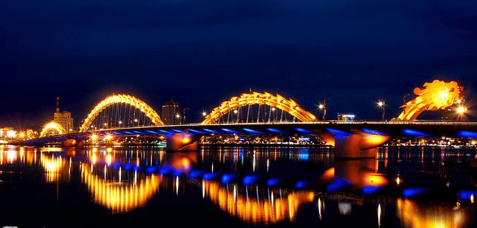

Fossil Threads in the Web of Life
Cầu Rồng là cây cầu thứ 7 và là cây cầu mới nhất bắc qua sông Hàn.[1] Vì cây cầu có hình dáng giống một con rồng nên được gọi là Cầu Rồng Cầu Rồng dài 666 m và rộng 37,5 m với 6 làn xe chạy. Cầu được khởi công xây dựng vào ngày 19/7/2009 và chính thức thông xe ngày 29 tháng 3 năm 2013, kinh phí xây cầu gần 1,5 nghìn tỷ đồng (US$88m).[2] Cầu được thiết kế bởi Ammann & Whitney Consulting Engineers với tập đoàn Louis Berger. Việc xây dựng được thực hiện bởi Tổng công ty xây dựng công trình giao thông 1. Cây cầu hiện đại này bắc qua sông Hàn tại bùng binh (cũ) Lê Đình Dương/Bạch Đằng, tạo con đường ngắn nhất từ sân bay quốc tế Đà Nẵng tới các đường chính trong thành phố Đà Nẵng, và một tuyến đường trực tiếp đến bãi biển Mỹ Khê và bãi biển Non Nước ở rìa phía đông của thành phố. Cầu được thiết kế và xây dựng với hình dạng của một con rồng có khả năng phun lửa và phun nước.[3] Hiện tại, thời gian phun lửa và phun nước bắt đầu vào lúc 21 giờ các ngày thứ bảy, Chủ nhật hàng tuần và các ngày lễ lớn.[4]
This Season's guest speakers
- Nov: Jeffrey Toobin
- Oct: Andrew Ross Sorkin
- Jan: Amy Chua
- Feb: Scott Sampson
- Mar: Carlos Elre
- Apr: Ronan Tynan